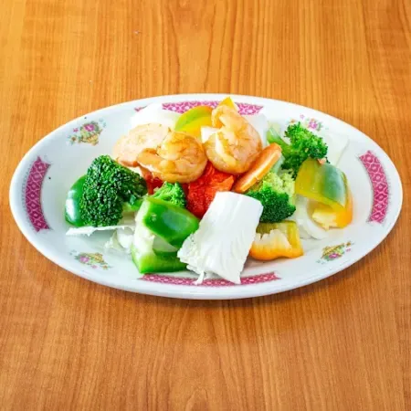
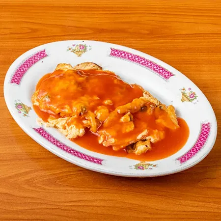
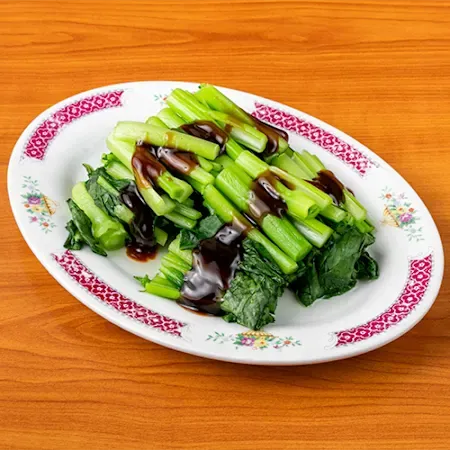

Amsterdamsestraatweg 191 · Utrecht
Hing Kee
Kantonees geroosterd vlees, wokgerechten en bamisoep. Bestel, haal op en eet thuis zoals het hoort.
Dinsdag t/m zondag 14:00 - 21:30 · maandag gesloten
Traditioneel Chinees, vers uit de wok
Bij Hing Kee ervaar je de verfijnde smaken van de traditionele Chinese keuken. Van hartverwarmende wan tan soep tot knapperige garnalen en smaakvolle roerbakgerechten: elk bord vertelt een verhaal van ambacht en traditie.
Met verse ingrediënten en liefde voor de Chinese eetcultuur brengen wij een stukje Azië naar jouw tafel. Kom langs en proef het zelf!
"Het beste Kantonees eten van Utrecht en omgeving"
"Chinees zoals het hoort te zijn. Dank."
Reviews van gasten die via de eigen bestelsite bestelden.




Openingstijden
Restaurant en afhalen
| Maandag | gesloten |
|---|---|
| Dinsdag | 14:00 - 21:30 |
| Woensdag | 14:00 - 21:30 |
| Donderdag | 14:00 - 21:30 |
| Vrijdag | 14:00 - 21:30 |
| Zaterdag | 14:00 - 21:30 |
| Zondag | 14:00 - 21:30 |
Langskomen of bellen
Hing KeeAmsterdamsestraatweg 191
3551 CA Utrecht